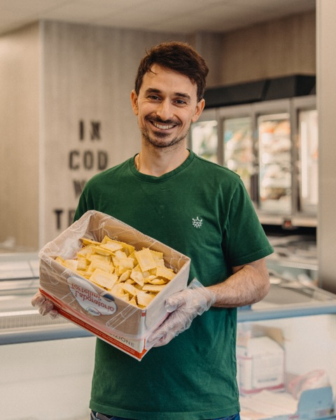

Dal prodotto alle persone.
Ho spostato il racconto dal prodotto a chi lo sceglie: chi lavora in negozio, chi cucina a casa, i titolari. Da qui la strategia: «La fiducia si conserva».
«La fiducia si conserva. Un doppio senso: si conserva nel cuore come nel freezer.»